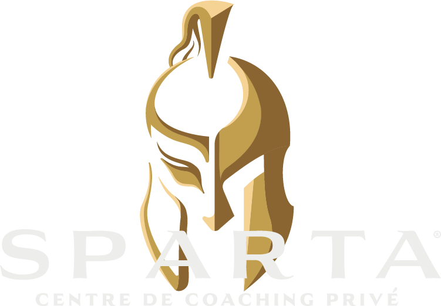

AVANTAPRÈS
AVANTAPRÈS AVANTAPRÈS
AVANTAPRÈS43ANS
NICOLAS · CASTELNAU
9MOIS
DE COACHING
3MOIS
PREMIERS MOIS · DIÈTE
J’avais envie
de me reprendre
un peu en main,
je sortais d’une période
difficile,
personnellement,
professionnellement.
Moi c’est Nicolas,
j’ai 43 ans,
je vis à Castelnau.
J’ai commencé
le coaching
en fin avril.
Peut-être 7, 8 mois,
9 mois, je sais pas,
je ne compte plus.
Plutôt que de rester
sans rien faire
l’été arrivant,
je me suis dit
pourquoi pas essayer
de se mettre
au sport à fond.
Du coup j’ai trouvé
coach Sparta,
qui était juste à côté
de chez moi.
J’ai fait
la connaissance
de Marco, Akli
et tous les coachs,
ça s’est
super bien passé,
le feeling
est bien passé.
J’ai pu me motiver
et être motivé
comme il fallait
pour tenir d’abord
les 3 premiers mois,
avec un premier mois
super difficile
avec la diète,
et puis après
un peu de
prise de masse.
